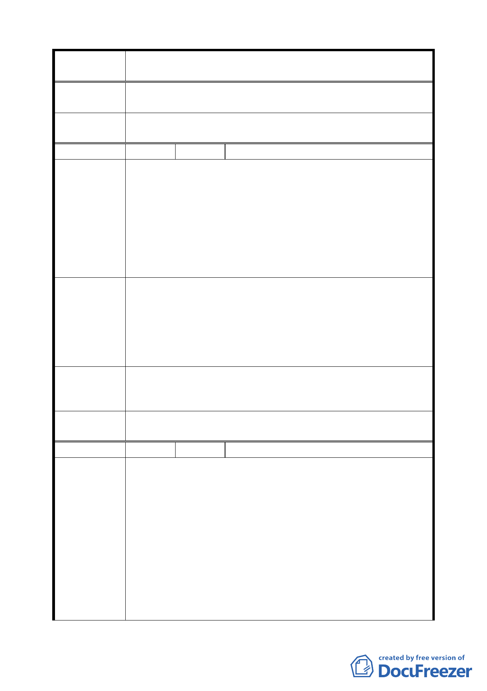

案 名 臺北市文山區都市計畫通盤檢討（細部計畫）案
務局新建工程處評估不宜開闢，同意市府評估意見，維
持原公展方案。
委員會議
決議
依專案小組審查結論辦理，並修正本案「細景 4」計畫內容。
編 號 ５ 陳情人 劉古雄（09430077000）
建議位置：景美段五小段 338-9、338-11 地號（面積 1 ㎡）。
建議理由：
土地所有權人劉古雄民國 72 年月 3 日原地目「建」，民國 80
陳 情 理 由 年後因鄰接第 338 等地號為本市都市計畫變更為公園用地，
（ 景 美 ） 被徵收，但其尖角第 338-9、338-11 地號未被同時徵收，此
時土地所有權人曾向當時之臺北市長張豐緒先生表示異議，
並多次陳情均未被接納，亦未給任何答覆，甚感遺憾，至今
已有多年。
一、 建議市政府本次細部計畫檢討後同時補發 338-9 地號
公園尖角地補償費給原地主，以彌補市民權益、長期所
建議辦法
受損失和冤屈。
二、 如市政府未能如願補償，原被徵收之 338 地號土地（公
園）建議變更恢復為原來之建地，由原地主購回以維公
正。
專案小組
審查結論
（94.7.4）
陳情地號仍維持道路用地使用，關於道路用地徵收問題，移
請市府工務局新建工程處協助辦理。
委員會議
決議
依專案小組審查結論辦理。
編 號 ６ 陳情人 劉詩宗（09430075500）
建議位置：興泰段三小段 245-1、247-1 地號及相鄰 245、247、
249、134 等地號（福興路四巷 11 號及同巷 15 弄與興隆國小
相鄰地區）。
建議理由：
陳情理由
（興隆）
一、 都市計畫通盤檢討之意見並非自擬計畫。
（一）凡論及都市計畫變更，必將產生損益相對之情
況，本案陳情地點及附近相關地區，前於第二次
通盤檢討時即已提出，都市計畫檢討單位卻以「為
免影響他人權益，在未取得對側土地權益人同意
前仍宜維持原計畫。」作為初研意見，實有失「通
盤檢討」之宏意，還不如稱作「自擬計畫」較適。
三〇